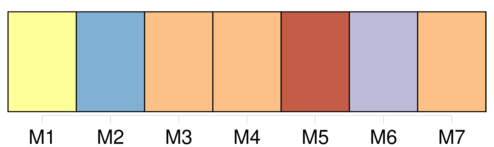
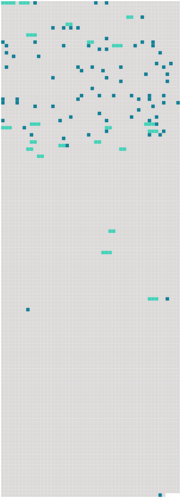

Longueur nb maillons : 101 mentions |
 |
[La mère de Rosalie] était [cette Charlotte Pictet] à [laquelle] M. Lucien Perey a emprunté bien des lettres dans sa Vie intime de Voltaire. [Elle] habitait avec [ses] parents la belle propriété de St-Jean, qui domine la jonction de l'Arve avec le Rhône, en aval de Genève. [5 phrases]
Lui -même y avait acquis le grade de major, et c'est pendant un congé passé à Lausanne qu'il fit la connaissance de [Charlotte Pictet] ; il [l'] épousa en 1757. [3 phrases] Samuel quitta le service au moment de son mariage et vint habiter chez les parents de [sa femme]
C'est à St-Jean que vécut le jeune ménage pendant cinq années ; c'est à St-Jean que naquit Rosalie, puis une seconde fille et un premier fils qui reçurent les noms de Louise et de Juste, c'est là que [Charlotte] aima, [pleura] , [sourit] et [souffrit] [2 phrases] Doué d'une belle figure, d'une haute stature, assez vain de sa personne, très ami du « bon ton », il tenait à ce qu'on lui rendît des honneurs, à ce qu'on recherchât son commerce, mais il faut croire que les démonstrations amoureuses de [sa propre femme] l'impatientaient, car, pour s'y soustraire, il prétextait plus souvent qu'il n'eût été nécessaire, des affaires l'appelant à son vignoble de Lalex, près Vevey. [1 phrases] [Charlotte] lui écrivait alors des lettres fort tendres et humides des larmes que faisait couler son absence ; mais, quand [on] est jeune, spirituelle, piquante, quand [on] a de beaux yeux noirs, ils ne peuvent pas toujours pleurer, et [l'abandonnée] trouvait chez Voltaire le moyen de s'amuser beaucoup. Bien souvent après [son] mariage, [elle] remonta sur les planches édifiées à Ferney et [prit] un rôle dans l'une ou l'autre des pièces composées par l'ami de [ses] parents.
Quelquefois Samuel revenait pour [lui] donner la réplique, et alors [la jeune femme] jouissait de tout [son] cœur des répits que [lui] laissaient soit une santé déjà très compromise, soit l'arrivée successive des enfants que l'on mettait en nourrice dans les environs de Genève.
Nous donnerons ici quelques échantillons des lettres de [Charlotte] à [son] mari, et nous ne choisissons pas les plus piquantes ; aussi bien, ce n'est pas la vie de [Charlotte] , mais celle de Rosalie, que nous retraçons ; nous reproduisons de préférence celles où apparaissent les enfants, mêlés à la vie mondaine « Rosalie fait tout [mon] bonheur ; elle est gaie et caressante. [Je] la gâte beaucoup et ne lui [fais] rien apprendre, elle s'en porte mieux. [10 phrases] Oui, oui, très fort, eh bien, [je] te hais, [je] te hais, [je] te hais, i, i, i. Priez votre valet de chambre d'écrire à une de [mes] femmes pour que [je] sache si vous vous portez bien. [Je] vous félicite de la troupe que vous avez à Lausanne, [je] suppose que vous y passerez l'hiver, dans les foyers. [1 phrases]
»
Enfin, en automne 1762, le jeune ménage s'établit chez lui, dans un appartement sis à la Cour de St-Pierre, et c'est là que naquit, le 3 octobre de cette année, Charles, le dernier enfant de [Charlotte]
L'hiver suivant, [Charlotte] écrit à Samuel : [1 phrases] que [j'] ai fait de choses aujourd'hui. Le matin des affaires, à dix heures [ma] toilette, à onze heures en chaise à porteurs jusqu'à la porte de Cornavin. [2 phrases] Un de volé que [je] joins ici sans l'avoir lu pour faire tuer le temps à [mon] minet. [3 phrases] » Beaucoup d'humeur contre la France, d'où [je] conclus que le dictionnaire a mal réussi. [1 phrases] De là chez [moi] , Dieu merci. [Je] sens bien que [je] suis vieille, car [je] rentre avec délice et [mes] petits autour de [moi] : « Adieu, [maman] , adieu, [maman] , et le pa?? [2 phrases] Et puis [je] pleure et Rosalie aussi. Ce n'est pas le moyen de mettre quelque chose entre [mes] os et [ma] peau. [1 phrases] « [Je] veux vous conter [ma] vie. [1 phrases] Cette vie tranquille [me] convient fort, [je] suis plus gaie que dans le monde. — [J'] arrive du collège où [j'] ai mené Juste [ il avait précisément cinq ans accomplis, l'âge où les petits Genevois commençaient leur éducation publique ] il entrera lundi, on [m'] a promis d'en avoir grand soin et de le pousser. [2 phrases] « [J'] ai furieusement fait la mère aujourd'hui, une maîtresse d'ouvrage tous les soirs, des habits, des robes, des bonnets. [1 phrases] On [m'] a fait dire qu'il s'était si bien trouvé du collège qu'il n'en voulait pas revenir. Lisette, qui commence bien à apprendre à lire, a travaillé avec tant de cœur à sa leçon, que [j'] ai été obligée de la faire quitter. Rosalie repasse son catéchisme et sa géographie et [me] tient fort bonne compagnie.
Elle [m'] aime beaucoup, beaucoup, et [me] sait bon gré de lui lire et de l'amuser. « A propos, [j'] ai été bien malade, de grandes douleurs au côté ……
maintenant [je] suis très bien, à une forte migraine près, que [je] vais mettre coucher ». [1 phrases]
la pauvre petite Rosalie ne devait plus avoir longtemps [une bonne mère] pour la cajoler, lui lire les contes de fées et lui faire répéter sa géographie. Au commencement de 1766, la maladie qui minait peu à peu [la jeune femme] [la] terrassa et le 25 mars, [Charlotte de Constant] était enlevée à [sa] famille. [1 phrases] Au cours de sa vie il arrivera rarement à Rosalie de parler de [sa mère] , mais elle qui toujours aura si grand besoin de tendresse et d'intimité, regrettera assurément et presque sans s'en rendre compte ces épanchements de mère à fille qui plaisaient tant à l'une et à l'autre.
Citons encore ce fragment des lettres de [Charlotte] qui jette un jour sur le genre de relation existant entre [la jeune femme] et [sa] fille aînée : [3 phrases] Puis, [me] regardant : [Tu] n'es pas jalouse, n'est -ce pas?? — Non, cher ange, c'est ce qui fait que [je] t'adore. [1 phrases]
Beaucoup d'années plus tard, quand Rosalie pourra revenir sans émotion sur l'événement qui la priva de [sa mère] , elle dira : La mort lui enleva au bout de quelques années de mariage [cette femme] [dont] il était adoré. [1 phrases] Il perdit en même temps une partie de sa fortune qu'il avait placée sur la tête de [sa femme] [1 phrases]
Après la mort de [leur mère] , la vie dut être triste pour les quatre enfants placés entre une grand'mère et un père qui ne s'aimaient guère, mais, heureusement, l'enfant ne s'aperçoit pas trop des dissentions intestines, même quand il en est l'objet. [1 phrases]
M. Pictet mourut deux ans après [sa fille] et voici la réflexion que sa mort suggère à M. Du Pan de Morillon. [42 phrases]
» [12 phrases]
» [28 phrases] Il est curieux que le premier portrait que nous ayons d'elle soit tracé par [Charlotte de Constant] , celle [dont] elle devait prendre la place. [6 phrases]
Elle ferait une fort brave petite femme, mais n'irait pas, [je] crois, demeurer à Lausanne ». [107 phrases] Le spectacle aussi attirait les filles de Samuel et de [Charlotte] |
 |
Il est possible de télécharger la ressource sur la page Ortolang |
Si vous avez des questions ou vous voyez des erreurs, merci d'envoyer un mail à silvia.federzoni89@gmail.com |